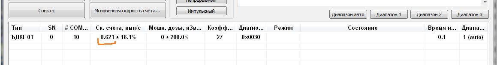
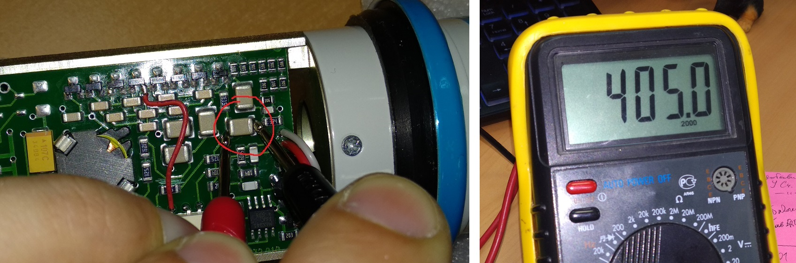

БДКГ-01. Настройка
- Наклеить наклейку с номером на угол процессорной платы или на контроллер. В перечень номера БД, дату,
количество блоков, отданных в настройку, и ФИО регулировщика.

- Проверить/сделать доработку 200V
- С помощью адаптера USB-БД подключить БД к компьютеру, программа «Background calibration”
- Проконтролировать ток потребления ≈ 8,5 мА.
- Проконтролировать показания на фоне ≈ 0,7±0,1 с-1

- Присвоить внутренний номер, дату производства
Если перед нажатием кнопки "Запись идентификационных данных" не выделять строку
с данными от БД, то программа подставит текущий год и месяц автоматически
- Вольтметром на пределе 1000В (желательно статическим) проверить уровень высокого напряжения на плате
усилителя в трех диапазонах (~400В, ~400V, ~460). Записать полученные значения в перечень.

Одновременно удобно делать и следующий пункт:
- Поднести источник гамма-излучения Cs-137 активностью 105 Бк
（к средней метке). Записать в перечень данные настройки скорости
счета в трех диапазонах.
Как быстро переподключать БД: отсоединить ODU-разъем, включить другой БД,
в программе нажать "Разорвать связь с БД"
- Отдать БД на сборку стаканов
- Отдать собранные БД на линейку с чистыми паспортами для приработки и калибровки.
Если счетчики уже приработаны, на корпус БД наклеить соответствующую наклейку,
чтобы зря опять не прирабатывались
- Серийный номер в паспорте не писать, Писаренко сам напишет!!
Удобнее работать одновременно двумя мультиметрами — один настроен на измерение тока и
подключен в разрыв от адаптера USB-БД, другой настроен на измерение напряжения
 Если выскочила ошибка "Разрушены прочие данные в энергонезависимой памяти":
Если выскочила ошибка "Разрушены прочие данные в энергонезависимой памяти":
- Дождаться, пока изменится значение времени наработки
- Переподключить БД
- Ошибка пропадет